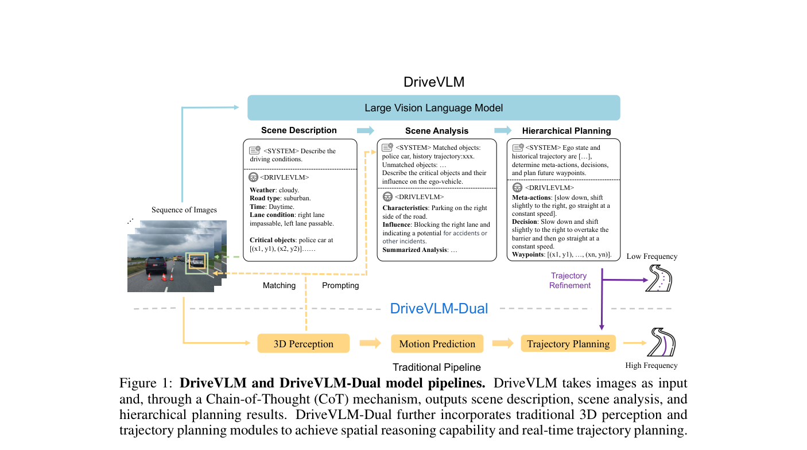
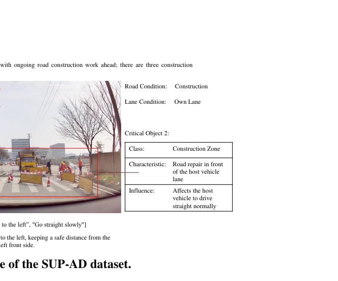
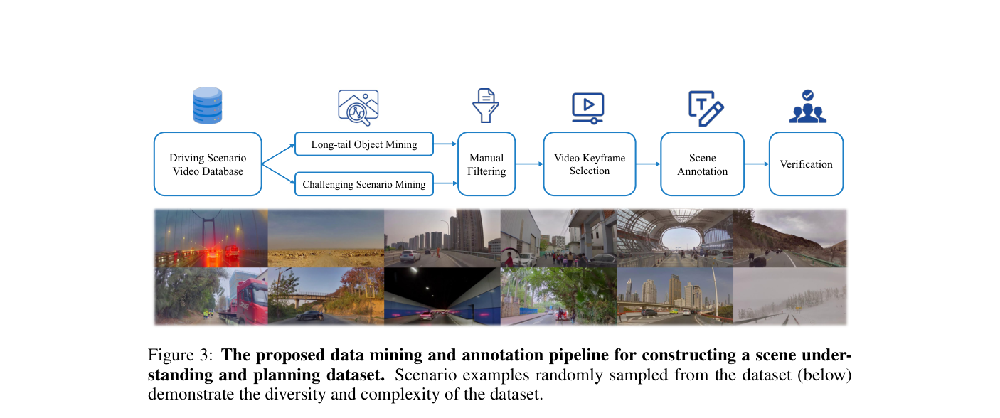

DriveVLM: The Convergence of Autonomous Driving and Large Vision-Language Models
DriveVLM 用 VLM 进行场景描述、场景分析和层级规划，并提出 DriveVLM-Dual 将 VLM 语义推理与传统 3D 感知/规划管线融合，在复杂场景理解和 nuScenes 规划上提升安全性。
Vision-Language Model、Chain-of-Thought、SUP-AD、DriveVLM-Dual、hierarchical planning、scene analysis、nuScenes、production vehicle
VLM reasoning + dual-system planning
部分：论文与项目材料公开，完整生产系统不可复现
高：适合作为 VLM 参与场景理解/层级规划的代表
计划公网链接：https://ixgnozeix.github.io/paper-reports/report/drivevlm/
1. 论文速览
DriveVLM 的定位是“慢思考语义系统 + 快速几何管线”。纯 VLM 可以从图像生成场景描述、对象级分析、meta-action 和决策解释，但 VLM 的空间定位和推理时延不足以独立承担低层规划；因此作者提出 DriveVLM-Dual，把 VLM 的长尾理解能力接到传统 3D 感知与规划输出上。论文在 SUP-AD 上报告 DriveVLM w/ Qwen 的 scene description 得分 0.71、meta-actions 得分 0.37，优于 Lynx/CogVLM/GPT-4V 设置；在 nuScenes 规划中，DriveVLM-Dual† 达到 Avg. L2=0.31m、Avg. Collision=0.10%，优于 VAD-Base 的 0.37m/0.14%。
2. 研究问题与动机
城市自动驾驶的难点并不只在检测常见车辆，而在复杂路况、警察手势、稀有物体、施工和人类意图。传统 pipeline 擅长几何定位，但很难自然描述“为什么要让行”；VLM 擅长语义和常识，却不擅长精确 3D 空间和实时控制。DriveVLM 选择 dual-system，是因为直接让大 VLM 输出低层轨迹会带来时延和空间误差，而把它作为高层语义推理器可以补齐长尾理解。
4. 方法详解
DriveVLM pipeline 包含三层语言化输出：scene description 描述道路、对象和环境；scene analysis 分析关键对象及风险；hierarchical planning 生成 meta-action 与可解释决策。DriveVLM-Dual 在此基础上接入传统 3D perception 和 trajectory planning，把 VLM 的语义判断作为高层约束或决策辅助，而非完全替代 planner。SUP-AD 数据集通过数据挖掘和自动/人工标注构造复杂场景问答与规划样例，训练时还与 Talk2Car、BDDX、Drama、SUTD、LLaVA 等数据 co-tuning，降低 VLM 灾难性遗忘。
5. 实验与结果
实验包括 SUP-AD 场景理解和 nuScenes 开环规划。SUP-AD Table 1 显示 DriveVLM w/ Qwen 在 scene description 和 meta-actions 上分别为 0.71 和 0.37；GPT-4V in-context 只有 0.38 和 0.19，说明专门驾驶数据调优明显重要。nuScenes Table 2 中 DriveVLM-Dual† 的 Avg. L2=0.31m、Avg. Collision=0.10%，优于 VAD-Base 和单独 DriveVLM。定性图展示骑行者、交警手势等长尾场景解释。证据缺口是 dual-system 部分依赖传统管线，难以说明 VLM 本身能完成全部低层控制。
6. 复现要点
复现应先复刻 SUP-AD 风格数据：给每个场景生成图像、对象描述、meta-action 和决策说明；随后用 Qwen/LLaVA 类 VLM 做 instruction tuning，再接入已有 3D planner 形成 Dual。计算资源主要取决于 VLM fine-tuning 和 nuScenes 数据预处理。没有生产车系统代码时，复现验收应聚焦两个指标：SUP-AD 语义分数能接近论文趋势，DriveVLM-Dual 在同一 planner 上能降低 L2/Collision。
7. 分析、局限与边界
DriveVLM 的价值在于承认 VLM 与几何 planner 各有短板，用双系统把语义泛化和几何安全结合。论文证据支持“VLM 语义推理能改善长尾规划”，但不能证明端到端 VLM 可独立实时驾驶。后续可以尝试把 VLM 输出约束转成可微 reward 或形式化 safety predicate，而不是只作为自然语言决策。
8. 组会问答准备
A：因为 VLM 的空间推理和推理时延不足以直接承担实时低层规划，Dual 保留传统 3D 管线的几何精度，同时引入语义推理。
A：它提供复杂场景的描述、分析、meta-action 和决策标注，用于训练 VLM 理解驾驶长尾语义。
A：GPT-Driver 主要把结构化感知/预测结果转成语言做轨迹生成；DriveVLM 从图像/VLM 出发做场景理解，并通过 Dual 接几何 planner。
A：DriveVLM-Dual 在 nuScenes Avg. L2 和 Collision 上优于 VAD-Base，说明语义高层信号能改进已有 planner。
A：SUP-AD 标注和 Dual 系统接口，尤其是如何把 VLM 语义输出稳定转成 planner 可用约束。
9. 补充图解与附录证据



我的阅读笔记
适合作为“慢思考 VLM + 快速 planner”的代表。组会可重点比较 LMDrive 的闭环语言控制和 DriveVLM 的 dual-system 语义辅助，两者不是同一层次的端到端。